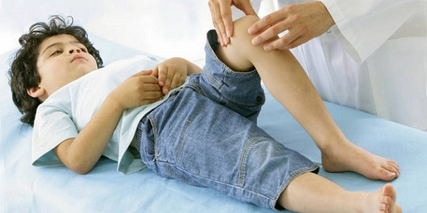

Ваш ребенок в возрасте от 9 до 12 лет — или подросток — начинает замечать и жаловаться на болезненную припухлость непосредственно под надколенником («коленной чашечкой»). Боль сильнее после того, как маленький атлет позанимался спортом, и меньше после отдыха. Ваш ребенок раздражается, а вы беспокоитесь. Именуемая болезнью Осгуда — Шлаттера (в честь двух врачей, которые открыли ее больше ста лет назад), эта особенность бурного роста чаще встречается у мальчиков и занимающихся спортом девочек. На самом деле это не болезнь, а скорее одна из особенностей бурного подросткового роста. Болезнь Осгуда — Шлаттера развивается на ограниченном участке, где сухожилие идет поверх коленной чашечки и врастает в хрящ — или пластинку роста — головки большеберцовой кости. Частые занятия спортом, когда это сухожилие растягивается рядом с пластинкой роста, вызывают болезненное воспаление и отек в этом месте. Доктор Билл помнит, как у него была подколенная припухлость, когда он был подростком и посещал Католическую гимназию. Ему было очень больно становиться на колени, и он до сих пор помнит монашек, укоряющих его за то, что он не хотел молиться на коленях, и не верящих в то, что это из-за боли в коленях.
ПРИЗНАКИ И СИМПТОМЫ
ЧТО ДЕЛАТЬ
Убедите своего ребенка, что это болезнь роста. Он должен определить, какие движения усиливают боль в этой области, и постараться избегать их, насколько это возможно, во время занятий спортом. Если боль усиливается и опухоль увеличивается, возможно, ребенку нужно сменить вид спорта. В дополнение к этому:
• Ваш ребенок должен носить подпяточник и амортизирующую спортивную обувь.
• Ваш ребенок должен носить наколенники во время занятий контактными видами спорта, например, футболом, баскетболом или борьбой.
• Проконсультируйтесь с тренером своего ребенка и убедитесь, что ваш ребенок делает хорошую растяжку и разогревающие упражнения перед занятиями спортом.
• Чтобы свести к минимуму воспаление, прикладывайте холод к распухшему участку после тренировки.
• Ибупрофен можно использовать три раза в день на протяжении нескольких дней, чтобы успокоить боль.
Как и в случае с обычной болезнью роста, большинство детей перерастают эти болезненные опухоли, но иногда эти участки остаются немного чувствительными и во взрослом возрасте.
Здоровье ребенка от докторов Сирс / Сирс У. и др.